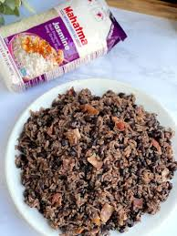

Inicio
Congri

Receta de Congri Cubano
El congrí o moros y cristianos, como también se le conoce a
este plato muy popular en la gastronomía cubana, consiste
de arroz con frijoles negros o rojos. Su preparación tiene
sus trucos que, aunque sencillos, son la clave para que
el arroz te quede negrito. Por suerte yo los aprendí de
una muy apreciada y querida amiga cubana y desde entonces
he seguido al pie de la letra sus recomendaciones,
pero siempre dándole mi toque personal.
Ingredientes
- 1 lb de frijoles negros, ablandados o enlatados
- 3 tazas de arroz grano parbolizado (Parboiled rice)
- 1 taza de aceite de oliva, dividida
- 2 hojas de laurel
- 4 dientes de ajo, finamente picado
- 1/2 cucharadita de comino molido
- 2 tazas de cebolla cortadas en juliana
- 1 taza de pimiento amarillo
- 1 taza de pimiento rojo
- 1 taza de pimiento naranja
- Sal al gusto
Instrucciones
- Si optas por usar los frijoles enlatados, omite este paso y ve al próximo.
Ablanda los frijoles secos, lávalos y cocínalos a fuego medio en un caldero
grande en 1 1/2 litro de agua, 1 cucharadita de sal, ajo, comino y laurel.
Deja hervir hasta que estén blandos, aproximadamente 1 hora, verificando
ocasionalmente que tengan suficiente agua.
-
En un caldero (arrocero) grande, vierte 1/2 taza de aceite de oliva y
sofríe el arroz por unos minutos, enseguida agrega los frijoles, verifica
que solo uses 5-6 tazas agua de la misma en que cocinaste los frijoles.
Cocínalo a fuego medio bajo tapado hasta que el arroz haya absorbido el
líquido, aproximadamente 20 minutos.
-
Calienta el aceite en una sartén grande y agrega los pimientos y cebollas
cocínalos por unos 2 minutos solo para amortiguarlos un poco. Una vez listo,
viértelos sobre el arroz ya cocido y mezcla bien. Adorna con 1 pimiento
morrón cortado en tiras y vierte el líquido del mismo sobre el arroz.